专题02 线段上的动点问题的四种模型

目录
题型一：线段上含动点求线段长问题 1
题型二：线段上含动点求定值问题 7
题型三：线段上含动点求时间问题 15
题型四：线段上含动点的新定义型问题 21

题型一：线段上含动点求线段长问题
1．如图， ，C为线段
，C为线段 上一动点，点D在线段
上一动点，点D在线段 上且满足
上且满足
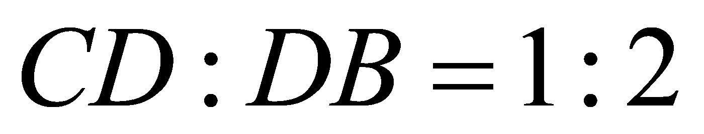
．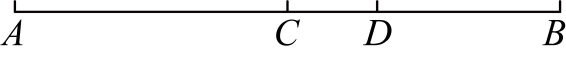
(1)当C为线段的中点时，求 的长．
的长．
(2)若E为线段 的中点，当
的中点，当 E时，求
E时，求 的长．
的长．
【答案】(1)2
(2)6
【分析】本题考查了两点间的距离，解题的关键是正确的识别图形．
（1）根据线段中点的性质计算即可；
（2）根据线段中点的性质和给出的数据，结合图形计算．
【详解】（1）解：∵点C为中点，
∴ ，
，
∵
∴ ；
；
（2）解：如图，
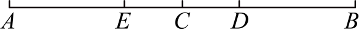
∵E为中点，
∴
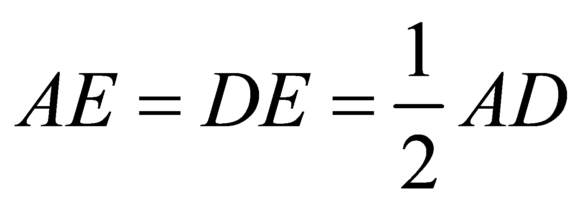
∵ ，
，
∴，
∵
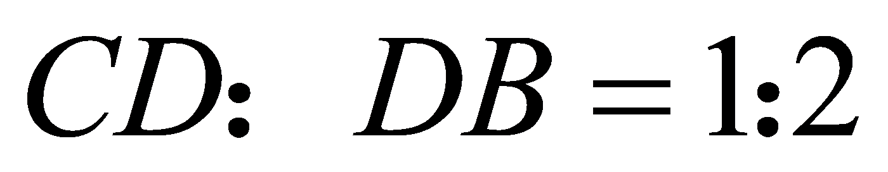
，∴ ，
，
∴
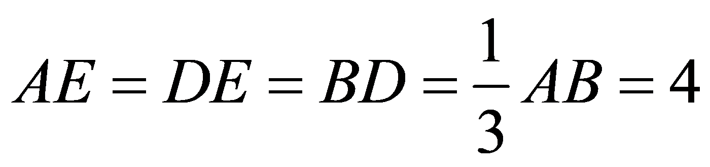
，∴
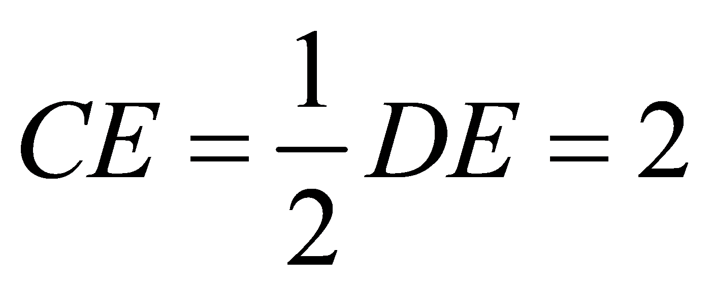
，∴
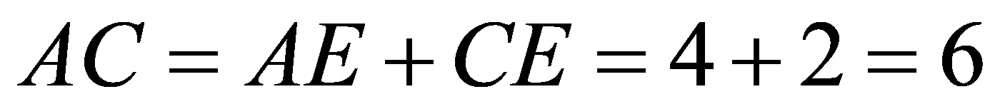
．2．已知线段
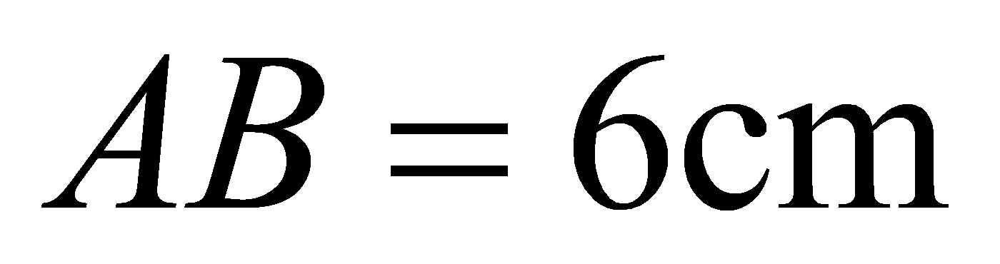
，点 是线段
是线段 延长线上一个动点，
延长线上一个动点， 是线段
是线段 的中点．
的中点．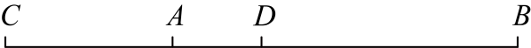
(1)如图，若
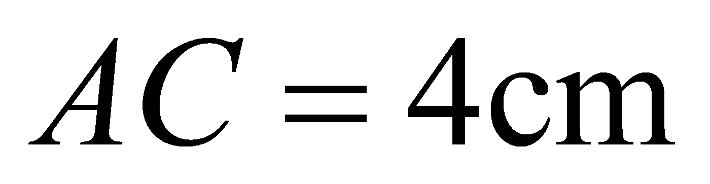
，求线段的长；(2)若的长逐渐增大，则的长的变化趋势是____________；
①变小；②变大；③先变大，后变小；④先变小，后变大．
(3)若，画出所有符合条件的图形并求线段的长．
【答案】(1)线段的长为
(2)④
(3)画图见解析，的长为
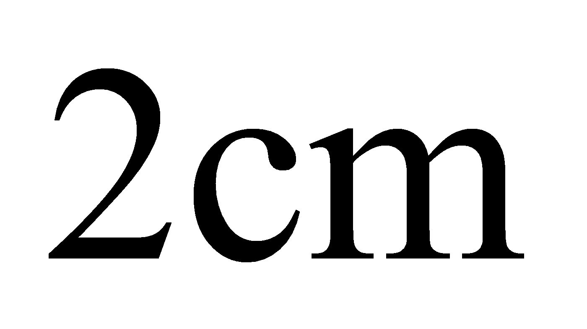
或
【分析】本题主要考查了线段之间的和差关系，线段中点的定义，解题的关键是正确理解题意，根据题意进行分类讨论．
（1）先根据题意求出的长度，再根据中点的定义求解即可；
（2）根据题意将的长度表示出来，即可进行解答；
（3）分两种情况画出图形，讨论即可：当点D在上时，当点D在延长线上时．
【详解】（1）解：∵，，
∴，
∵是的中点，
∴
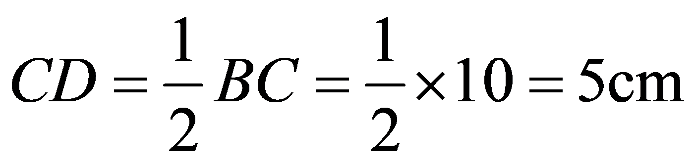
∴
∴线段的长为 ；
；
（2）解：∵随着的变长，越来越靠近点 ，当
，当
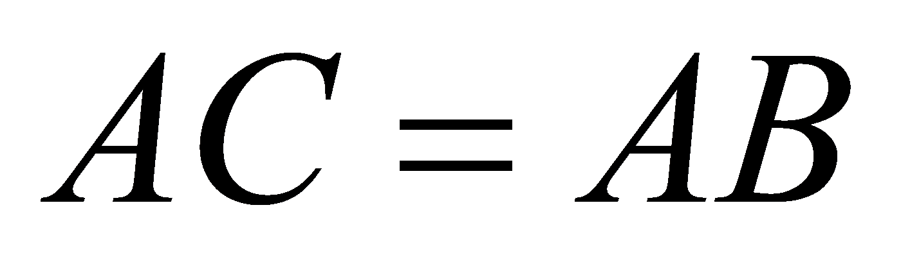
是点与重合，然后点离点越来越远，故选：④；
（3）解：当点在上时，
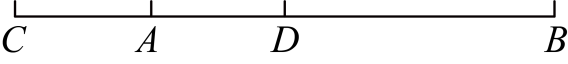
∵，，
∴，
∵是的中点，
∴，
∴；
当点在延长线上时，
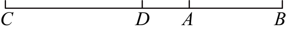
∵，，
∴．
∵是的中点，
∴，
∴．
综上所述：的长为 或
或 ．
．
3．已知， ，点C为射线上一个动点，点E，F分别是
，点C为射线上一个动点，点E，F分别是 的中点．
的中点．
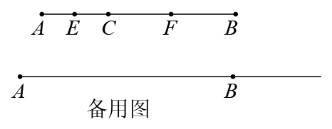
(1)如图，若点C在线段上，且 ，求
，求 的长度；
的长度；
(2)若点C在线段的延长线上，求 的长度．
的长度．
【答案】(1)
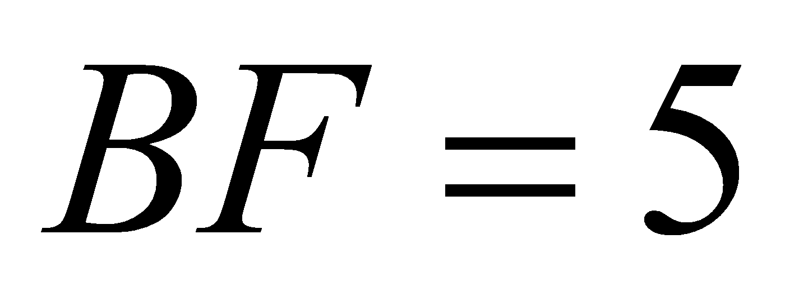
(2)8
【分析】(1)根据AC=6，AB=16可得BC，再根据线段中点的定义可得BF的长；
(2)当C为射线AB上一点，且E，F分别是AC，BC的中点，可表示线段EC、CF的长度，再利用EF=CE一CF．
【详解】（1）∵E是线段的中点，
∴
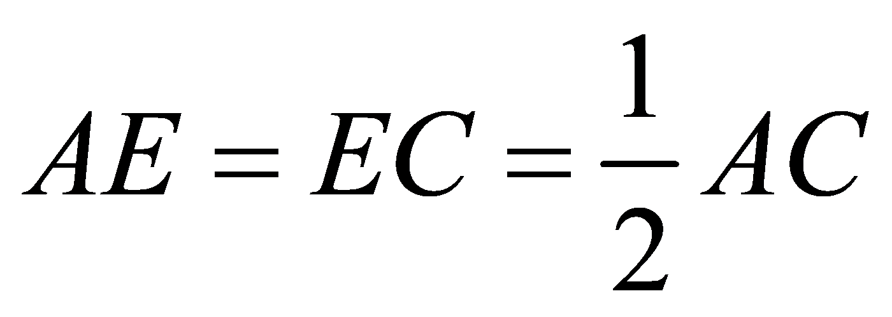
，∵F是线段的中点，
∴
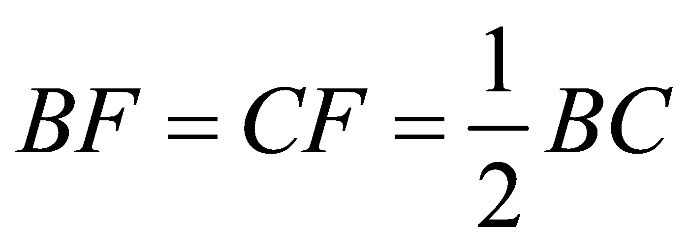
，若点C在线段上，且，
∴ ，
，
则；
（2）如图，若点C在线段的延长线上，
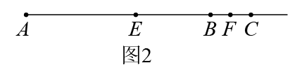
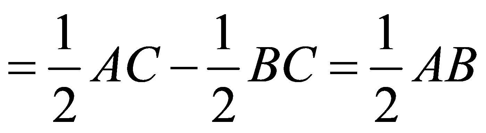
 ，
，
故EF的长度为：8．
4．按下列要求完成回图和计算：
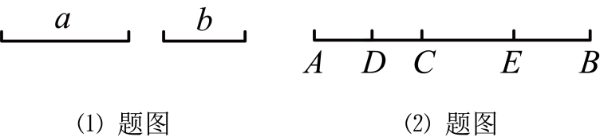
(1)已知线段a和b，求作线段 ，使
，使
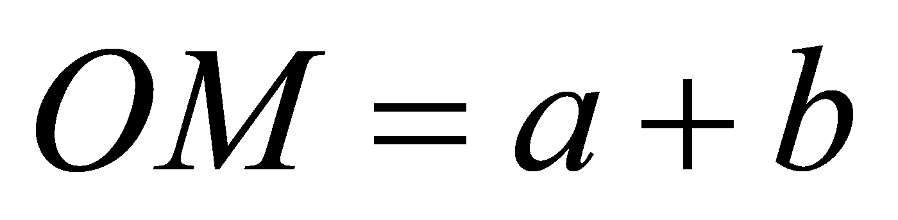
（要求：尺规作图，保留作图痕迹，不写作法）；(2)已知线段 ，点C为上的一个动点，点D、E分别是和的中点．
，点C为上的一个动点，点D、E分别是和的中点．
若：①点C恰好是中点，则 ___________
___________ ，
，
②，求 的长．
的长．
【答案】(1)见解析
(2)①6；②
【分析】本题主要考查了线段的尺规作图，线段的和差计算，熟知相关知识是解题的关键．
（1）根据线段的尺规作图方法作图即可；
（2）①由线段中点的定义得到 的长，进而得到的长即可得到答案；②先求出的长，再由线段中点的定义得到的长即可得到答案．
的长，进而得到的长即可得到答案；②先求出的长，再由线段中点的定义得到的长即可得到答案．
【详解】（1）解：如图所示，线段即为所求；
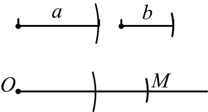
（2）解；①∵，点C恰好是中点，
∴
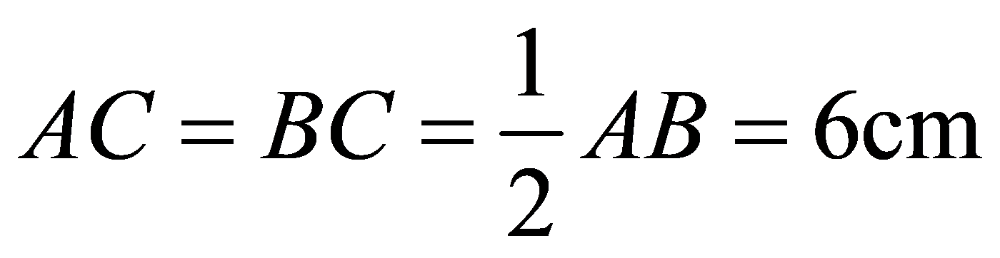
，∵点D、E分别是和的中点，
∴
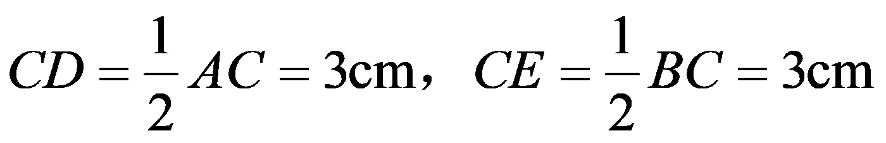
，∴；
②∵，，
∴，
点D、E分别是和的中点，
∴
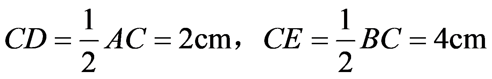
，∴．
5．如图，直线 上有两点，点
上有两点，点 是线段上的一点，．
是线段上的一点，．
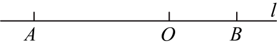
(1)若 ，则
，则 ___________，
___________， ___________．
___________．
(2)在（1）的条件下，若动点 ，
， 分别从，
分别从， 同时出发，向右运动，点的速度为
同时出发，向右运动，点的速度为
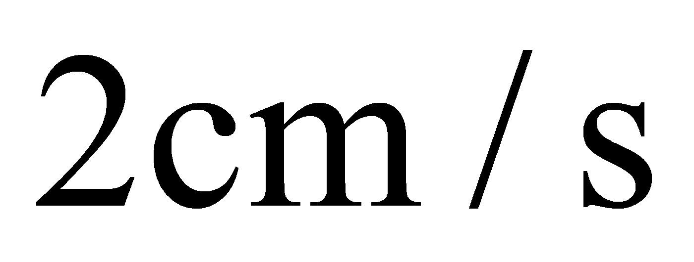
，点的速度为 ．设运动时间为
．设运动时间为 ，当点与点重合时，、两点停止运动．当
，当点与点重合时，、两点停止运动．当 为何值时，
为何值时， ．
．(3)为直线上一点，且满足 ，直接写出
，直接写出 的值___________．
的值___________．
【答案】(1)12；6
(2) 或12
或12
(3) 或
或 或1
或1
【分析】（1）根据，且，代入计算即可．
（2）根据题意，得
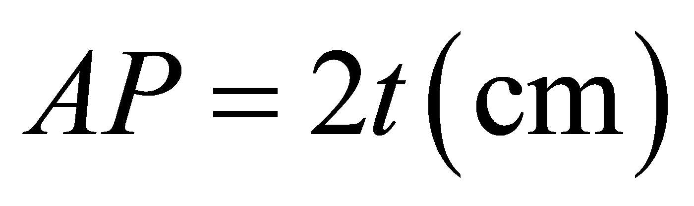
，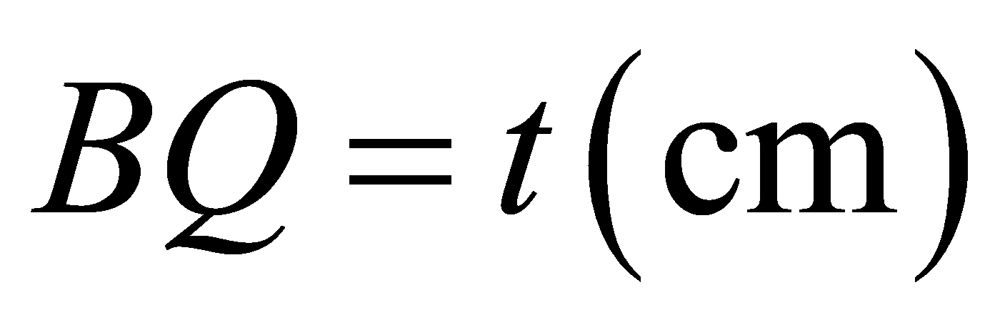
，此时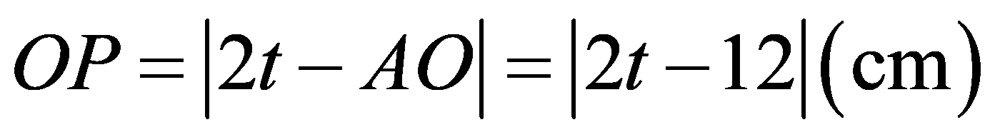
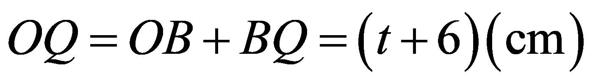
，当点与点重合时，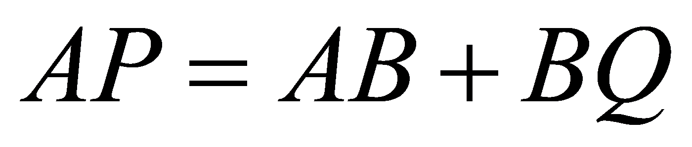
，此时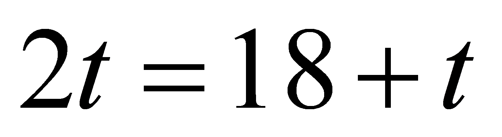
根据，得
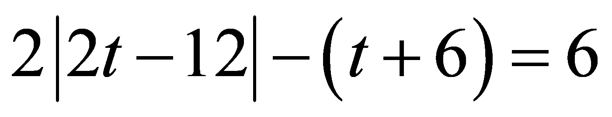
，解答即可．（3）分点Q在 上，
上， 上，点的左侧，点的右侧，结合
上，点的左侧，点的右侧，结合
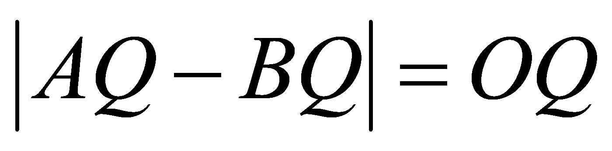
，分类求解即可．【详解】（1）解：∵，且，
∴
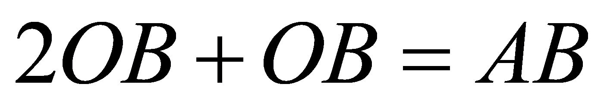
，∴
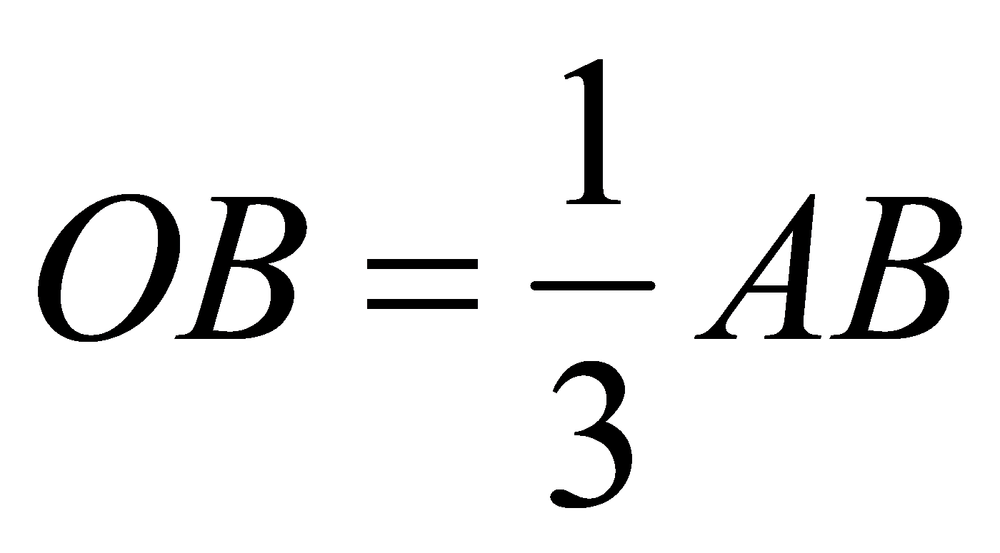
，∴
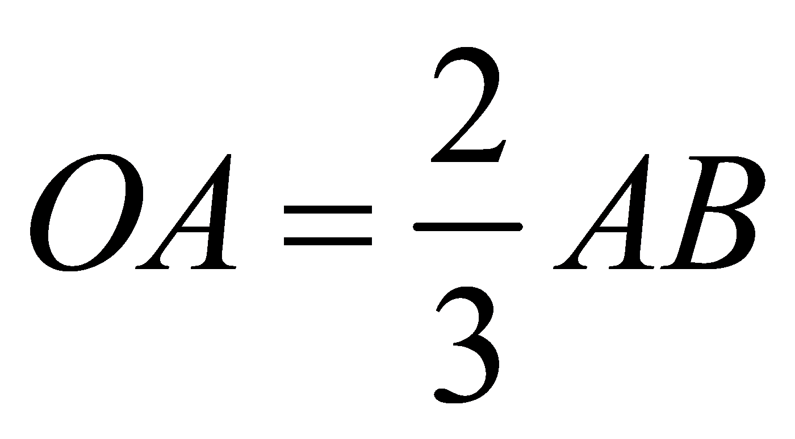
，∵，
∴
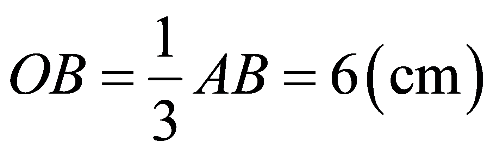
，∴
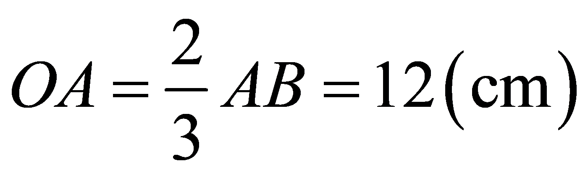
，故答案为：12，6．
（2）解：∵动点，分别从，同时出发，向右运动，点的速度为，点的速度为．设运动时间为，
得，，此时
，
当点与点重合时，，此时，
解得 ，
，
∵，
∴，
∴
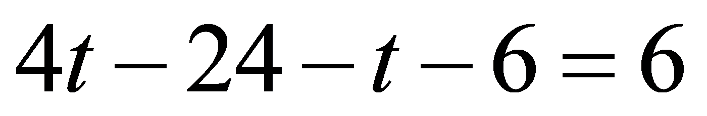
或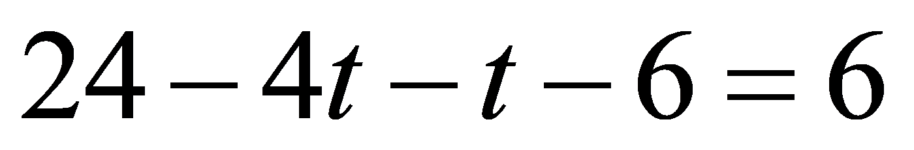
，解得
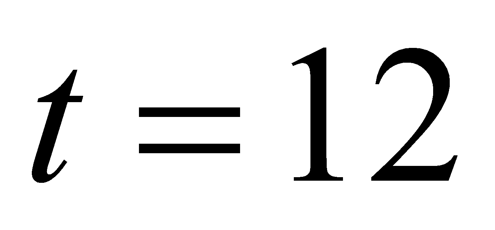
或，都符合题意，
故当为
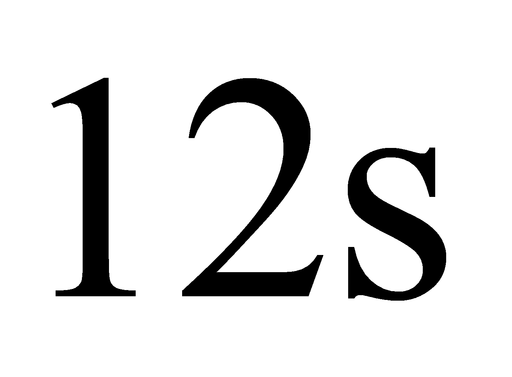
或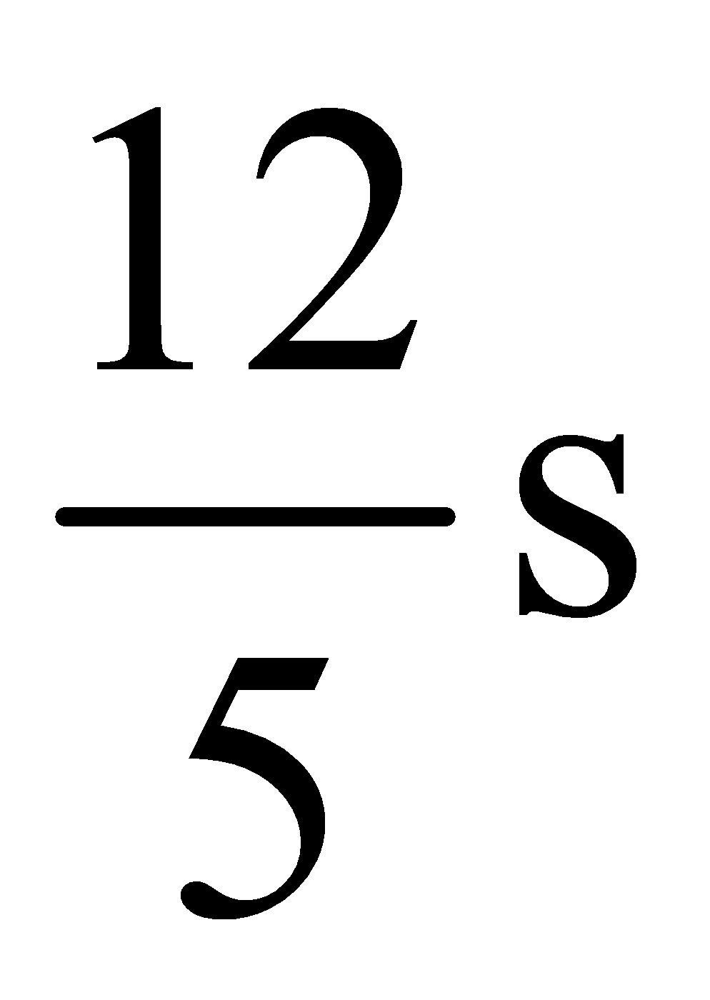
时，．（3）解：当点Q在上时，
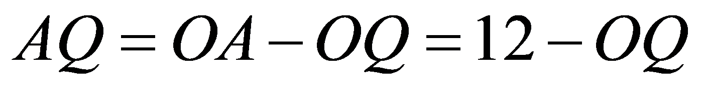
，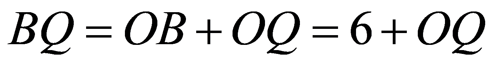
，∵，
∴，
∴或，
解得或，
此时或；
当点Q在上时，，，
∵，
∴，
∴或，
解得（舍去）或，
此时；
当点Q在点左侧时，，，
∵，
∴，
解得或（舍去），
此时；
当点Q在点右侧时，，，
∵，
∴，
解得或（舍去），
此时．
综上所述，的值为或或1．
故答案为：或或1．
题型二：线段上含动点求定值问题
6．应用题：如图，已知线段 ，点为线段上的一个动点，点、
，点为线段上的一个动点，点、 分别是和的中点．
分别是和的中点．

(1)若 ，求的长；
，求的长；
(2)若为的中点，则与的数量关系是______；
(3)试着说明，不论点在线段上如何运动，只要不与点和重合，那么的长不变．
【答案】(1)
(2)
(3)见解析
【分析】此题考查了线段的和差计算，线段中点的计算，解题的关键是熟练掌握线段之间的数量关系．
（1）首先根据线段的和差关系求出 ，然后根据线段中点的概念求出
，然后根据线段中点的概念求出 ，
， ，进而求和可解；
，进而求和可解；
（2）根据线段中点的概念求解即可；
（3）根据线段中点的概念求解即可．
【详解】（1） ，
，
 ，
，
点是的中点，
，
点是的中点，
，
 ()；
()；
（2）为的中点，
，
点是的中点，
 ；
；
（3）点是的中点，
，
点是的中点，
 ，
，
()，
的长不变．
7．如图，已知数轴上点表示的数为 ，点表示的数为
，点表示的数为 ，满足
，满足 ．动点从点出发以每秒4个单位长度的速度沿数轴向左匀速运动，设运动时间为秒．
．动点从点出发以每秒4个单位长度的速度沿数轴向左匀速运动，设运动时间为秒．

(1)数轴上点表示的数是_______，点表示的数是_______；
(2)若点从点出发向左运动，点为 的中点，在点到达点之前，求证：
的中点，在点到达点之前，求证： 为定值．
为定值．
【答案】(1)16，
(2)证明见解析
【分析】本题考查了绝对值的非负性、数轴、线段的中点等知识，熟练掌握数轴的性质是解题关键．
（1）根据绝对值的非负性可得 ，由此即可得；
，由此即可得；
（2）先根据数轴的性质可得，点表示的数是，再求出，然后根据线段中点的定义可得，则可得 ，代入计算即可得证．
，代入计算即可得证．
【详解】（1）解：∵， ，
，
∴，
∴，
∵数轴上点表示的数为，点表示的数为，
∴数轴上点表示的数是16，点表示的数是，
故答案为：16，．
（2）证明：由（1）已得：数轴上点表示的数是16，点表示的数是，
∴，
∵动点从点出发以每秒4个单位长度的速度沿数轴向左匀速运动，运动时间为秒，
∴点表示的数是，
∴在点到达点之前，， ，
，
∵点为的中点，
∴ ，
，
∴，
∴ ，
，
∴为定值．
8．如图，M是线段上一动点，沿 以
以 的速度往返运动1次，N是线段
的速度往返运动1次，N是线段 的中点，
的中点， ，设点M运动时间为t秒
，设点M运动时间为t秒 ．
．

(1)当 时，①
时，① ______，②此时线段
______，②此时线段 的长度
的长度 ______；
______；
(2)用含有t的代数式表示运动过程中 的长；
的长；
(3)在运动过程中，若中点为C，则 的长度是否变化？若不变，求出的长；若变化，请说明理由．
的长度是否变化？若不变，求出的长；若变化，请说明理由．
【答案】(1)①2，② ；
；
(2)当 时，，当时，
时，，当时， ；
；
(3)的长度不变，为
【分析】本题主要考查了线段的和差计算，线段中点的定义，列代数式：
（1）①根据路程等于速度乘以时间进行求解即可；②根据线段的和差关系和线段中点的定义可得答案；
（2）分当时，当时，两种情况讨论求解即可；
（3）根据线段中点的定义得到 ，再由线段的和差关系可得
，再由线段的和差关系可得 ．
．
【详解】（1）解；①由题意得，；
②∵，，
∴，
∵N是线段的中点，
∴；
（2）解：当时，，
当时，；
（3）解：∵点C和点N分别是 的中点，
的中点，
∴，
∴ ，
，
∴的长度不变，为．
9．如图，已知数轴上点A表示的数为4，点B表示的数为1，C是数轴上一点，且 ．动点P从点B出发，以每秒6个单位长度的速度沿数轴向左匀速运动．设运动时间为
．动点P从点B出发，以每秒6个单位长度的速度沿数轴向左匀速运动．设运动时间为 秒．
秒．
(1)直接写出数轴上点C表示的数；
(2)当点C在数轴的负半轴上时，用含t的代数式表示线段 的长度；
的长度；
(3)当点C在数轴的负半轴上时，设M是 的中点，N是的中点，点P在运动过程中，线段
的中点，N是的中点，点P在运动过程中，线段 是否发生变化?若有变化，请说明理由；若不变，请求出的长度．
是否发生变化?若有变化，请说明理由；若不变，请求出的长度．
【答案】(1) 或12
或12
(2)
(3)不发生变化，
【分析】题目主要考查线段的中点计算． 解题关键点是运用数形结合思想和分类思想分析问题．
（1）根据数轴上两点之间的距离即可得出点的坐标；
（2）分两种情况：若点P在线段 上，这时；若点P在线段的延长线上，这时；分别求解即可；
上，这时；若点P在线段的延长线上，这时；分别求解即可；
（3）分两种情况分析：①如图1，当点P在线段 上运动时，②如图2，当点P在的延长线上运动时，结合图形求解即可．
上运动时，②如图2，当点P在的延长线上运动时，结合图形求解即可．
【详解】（1）解：∵数轴上点A表示的数为4，C是数轴上一点，且．
∴当点C位于点A左侧时，点C表示的数为： ，
，
当点C位于点A右侧时，点C表示的数为： ，
，
∴点C表示的数为或12；
（2）当点C在数轴的负半轴上时，点C表示的数是 ，
，
①若点P在线段上，这时，
则；
②若点P在线段的延长线上，这时，
则；
综上可得：；
（3）线段的长度不发生变化.理由如下：
①如图1，当点P在线段上运动时，
；
②如图2，当点P在的延长线上运动时，
；
由上可知，线段的长度不发生变化，其值为4．
10．，两点在数轴上的位置如图所示，其中点对应的有理数为，且 ．动点从点出发，以每秒
．动点从点出发，以每秒 个单位长度的速度沿数轴正方向运动，设运动时间为秒（
个单位长度的速度沿数轴正方向运动，设运动时间为秒（ ）．
）．
(1)直接写出当 时，的长是______，此时点在数轴上对应的有理数是______；
时，的长是______，此时点在数轴上对应的有理数是______；
(2)请用含的代数式表示线段的长为______，此时数轴上点所对应的数表示为______；
(3)在（ ）的条件下，点
）的条件下，点 是线段的中点，点
是线段的中点，点 是线段
是线段 的中点，求此时线段
的中点，求此时线段 的长度．
的长度．
(4)为线段的中点，为线段 的中点．在点从点出发沿数轴正方向运动的过程中，线段的长度是否发生变化？若变化，请说明理由，若不变求出线段的长度．
的中点．在点从点出发沿数轴正方向运动的过程中，线段的长度是否发生变化？若变化，请说明理由，若不变求出线段的长度．
【答案】(1)， ；
；
(2) ，
， ；
；
(3) ；
；
(4)点在运动过程中，线段的长度保持不变，为 ，理由见解析．
，理由见解析．
【分析】（）由题意得 ，再根据两点间的距离可得点表示的有理数为，得到答案；
，再根据两点间的距离可得点表示的有理数为，得到答案；
（）根据题意列出代数式即可；
（ ）由（）得，则，然后利用线段中点和线段和差即可求解；
）由（）得，则，然后利用线段中点和线段和差即可求解；
（ ）分两种情况：当点P在点B的左侧时，当点P在点B的右侧时，分别求出即可．
）分两种情况：当点P在点B的左侧时，当点P在点B的右侧时，分别求出即可．
【详解】（1）解：∵点表示的有理数为，从点出发，以每秒个单位长度的速度沿数轴正方向运动，
∴时，，点表示的有理数为，
故答案为：，；
（2）解：线段的长为 ，此时点在数轴上对应的有理数是，
，此时点在数轴上对应的有理数是，
故答案为：，；
（3）解：由（）得，
∴，
∵点是线段的中点，点是线段的中点，
∴，，
∴；
（4）解：点在运动过程中，线段的长度保持不变，为，理由，
∵点是线段的中点，点是线段的中点，
∴，，
 当点在点的左侧时，
当点在点的左侧时，
，
 当点在点的右侧时，，
当点在点的右侧时，，
综上，点在运动过程中，线段的长度保持不变，为．
11．如图线段 ，动点从出发，以2个单位长度／秒的速度沿射线运动，为中点．
，动点从出发，以2个单位长度／秒的速度沿射线运动，为中点．

(1)当点在线段上运动时，
①出发多少秒后， ？
？
②试说明 为定值；
为定值；
(2)当点在线段延长线上运动时，设为的中点，有下列两个结论：
①长度不变；
②的值不变．
选出一个正确的结论，并求其值；
【答案】(1)①出发6秒后，；②见解析
(2)①长度不变，；
【分析】本题考查了两点间的距离，表示出各线段的长度是解题的关键．
（1）①出发 秒后，则，，，建立方程，求出的值即可．②设，则，，表示出
秒后，则，，，建立方程，求出的值即可．②设，则，，表示出 后，化简即可得出结论．
后，化简即可得出结论．
（2）设，则，， ，分别表示出，的长度，即可作出判断．
，分别表示出，的长度，即可作出判断．
【详解】（1）解：①设出发秒后，
则，，
 为中点，
为中点，
 ，
，
，
解得： ，
，
出发6秒后，；
②设，则，，


 为定值．
为定值．
（2）解：①长度不变，；
理由：如图
设，
为中点，
， ，
，
为的中点，
①，长度不变；
②，长度变化；
①长度不变，．
12．综合与实践
已知数轴上A、B两点所表示的数分别为 和9．
和9．

(1)观察发现：
直接写出线段 __________．
__________．
(2)情境探究：
情境①：当点P为线段的中点时，且M为 的中点，N为的中点，请你借助直尺在图1中画出相应的图形，并写出线段
的中点，N为的中点，请你借助直尺在图1中画出相应的图形，并写出线段 __________；
__________；
情境②：当点P为线段AB上的一个动点时，如图2，且M为的中点，N为的中点，试通过计算判断的长度是否发生变化？
(3)迁移类比：
当点P为数轴上点A左侧的一个动点时，如图3，且M为的中点，N为的中点，直接写出线段的长．
【答案】(1)12
(2)情境①：图见解析，6；情境②：的长度不变．
(3)6
【分析】本题考查了两点间的距离，线段的中点，理解中点的定义是解答本题的关键．
（1）根据两点间的距离求解即可；
（2）情境①：先根据点P为线段的中点求出 ，再根据M为的中点，N为的中点求出
，再根据M为的中点，N为的中点求出 ，，然后相加即可；
，，然后相加即可；
情境②：根据M为的中点，N为的中点求出， ，然后相加即可；
，然后相加即可；
（3）根据中点的定义得， ，然后根据求解即可．
，然后根据求解即可．
【详解】（1）．
故答案为：12；
（2）情境①：如图，

∵点P为线段的中点，
∴ ．
．
∵M为的中点，N为的中点，
∴ ，
， ，
，
∴．
故答案为：6；
情境②：∵M为的中点，N为的中点，
∴，，
∴．
∴，
∴的长度不变；
（3）∵M为的中点，N为的中点，
∴，，
∴ ．
．
题型三：线段上含动点求时间问题
13．如图，在数轴上，点A，B表示的数分别为 ，2，点P，Q从点A同时出发，沿数轴匀速向点B运动，点P的速度是每秒3个单位长度，点Q的速度是每秒2个单位长度．
，2，点P，Q从点A同时出发，沿数轴匀速向点B运动，点P的速度是每秒3个单位长度，点Q的速度是每秒2个单位长度．

(1)计算点A，B表示的数之和；
(2)设运动时间为，当点P是 的中点时，求t的值．
的中点时，求t的值．
【答案】(1)
(2)
【分析】本题主要考查了数轴，熟练掌握数轴上点表示的数，两点间的距离，中点定义，一元一次方程的应用，是解题的关键．
（1）A、B两点表示的数相加即得；
（2）根据 ，写出．根据P是的中点，得，解方程即得．
，写出．根据P是的中点，得，解方程即得．
【详解】（1）解：．
（2）解：，
．
当点P是的中点时，，
∴，
解得．
14．，两点在数轴上的位置如图所示，其中点对应的有理数为 ，点对应的有理数为．动点从点出发，以每秒个单位长度的速度沿数轴正方向运动，设运动时间为秒（）．
，点对应的有理数为．动点从点出发，以每秒个单位长度的速度沿数轴正方向运动，设运动时间为秒（）．
(1)若点为的中点，则点对应的有理数为_________；
(2)当 时，的长为_________，点表示的有理数为_________；
时，的长为_________，点表示的有理数为_________；
(3)当时，求的值．
【答案】(1)-2
(2)9，1
(3) 或
或
【分析】（1）先求出AP的长，然后根据中点的定义求出AP的长，进而可求出点对应的有理数；
（2）根据路程=速度×时间可求出AP的长，进而可求出点对应的有理数；
（3）分点P在点B的左边和点P在点B的右边两种情况求解．
【详解】（1）解：∵点A对应的有理数为，点对应的有理数为，
∴AB=4-（-8）=12，
∵点为的中点，
∴AP=，
∴点表示的有理数为-8+6=-2，
故答案为：-2；
（2）解：AP=3×3=9，
点表示的有理数为-8+9=1，
故答案为：9，1；
（3）解：∵点A对应的有理数为，点B对应的有理数为4．
∴ AB=12．
∴ PB==2．
当点P在点B左侧时，如图①所示，
，
∴．
当点P在点B右侧时，如图②所示，
，
∴．
∴当时，或．
15．如图，点 A，C 是数轴上的点，点 A 在原点，AC＝8．动点 P，Q 分别从 A，C 出发沿数轴正方向运动，速度分别为每秒 3 个单位长度和每秒 1 个单位长度．
设运动时间为t秒（t＞0），解答下列问题：
（1）点C表示的数是 ；点P表示的数是 ，点Q表示的数是 ．（点P，点 Q 表示的数用含 t 的式子表示）
（2）若点 M 是 AP 的中点，点 N 是 CQ 的中点，求 MN 的长．
（3）直接写出 t 为何值时，点P与点Q相距4个单位长度．
【答案】（1）8，3t，8＋t；（2） ；（3）2或6
【分析】（1）由题意可知，AP=3t，CQ=t，AC=8，A在原点，则点C表示的数为8，P表示的数为3t，Q表示的数为8+t；
（2）根据题意，得，，，AQ=8+t则 ，，则求解即可；
（3）由题意得 ，AQ=8+t，则，求解即可．
【详解】解：（1）由题意可知，AP=3t，CQ=t，AC=8，A在原点，
∴点C表示的数为8，P表示的数为3t，Q表示的数为8+t，
故答案为：8，3t，8+t；
（2）根据题意，得，，，AQ=8+t
∵点M是AP的中点，点N是CQ的中点，
∴， ，
∴，
∴；
（3）由题意得 ，AQ=8+t，
∴，
解得t=2或6．
∴当t=2或6时点P与点Q相距4个单位长度．
16．如图①，已知点C在线段 上，线段
上，线段 厘米，
厘米， 厘米，点M，N分别是，的中点．
厘米，点M，N分别是，的中点．
(1)求线段的长度；
(2)根据第（1）题的计算过程和结果，设，其他条件不变，求的长度；
(3)动点P、Q分别从A、B同时出发，点P以2厘米/秒的速度沿向右运动，终点为B，点Q以1厘米/秒的速度沿 向左运动，终点为A，当一个点到达终点，另一个点也随之停止运动，求运动多少秒时：
向左运动，终点为A，当一个点到达终点，另一个点也随之停止运动，求运动多少秒时：
①点P恰好为线段 的中点？
的中点？
②直接写出C、P、Q三点中有一点恰好是以另两点为端点的线段的中点？（除①外）
【答案】(1)厘米
(2)
(3)① ②
② 或
或
【分析】本题考查了线段的中点和计算，利用线段中点的性质得出关于t的方程是解题关键，要分类讨论，以防遗漏．
（1）根据中点的定义、线段的和差，可得答案；
（2）根据中点的定义、线段的和差，可得答案；
（3）①分为为线段 的中点和为线段的中点，利用线段中点的定义，可得方程，根据解方程，可得答案；
的中点和为线段的中点，利用线段中点的定义，可得方程，根据解方程，可得答案；
②分为C为线段的中点和点为线段的中点，利用线段中点的定义，可得方程，根据解方程，可得答案．
【详解】（1）解：∵线段  厘米， 厘米，点, 分别是, 的中点,
厘米， 厘米，点, 分别是, 的中点,
 厘米，
厘米，  厘米，
厘米，
 厘米；
厘米；
（2）∵点, 分别是 的中点,
的中点,
 ，
，
 ；
；
（3）解：①当 时，为线段的中点， ，
，
解得；
②当 时，是线段
时，是线段 的中点，得
的中点，得
解得
当  时，为线段的中点，
时，为线段的中点， 
解得 
当时，为线段的中点， 
解得(舍) ,
综上所述：或
17．如图，数轴上点A表示的数为，点B表示的数为7，动点C从点A出发，以每秒2个单位长度的速度沿数轴向右匀速运动，同时动点D从点B出发，以每秒1个单位长度的速度向左匀速运动．设点C运动时间为t秒 ．
．

(1)① 两点之间的距离为_______，线段的中点表示的数为_______．
两点之间的距离为_______，线段的中点表示的数为_______．
②用含t的代数式表示：t秒后，点C表示的数为_______，点D表示的数为_________．
(2)当时，描述C、D 两点的位置关系．
(3)点C运动4秒后，动点E从点B出发，以每秒5个单位长度的速度向右匀速运动，试探索：的值是否随着时间t的变化而变化？请说明理由．
【答案】(1)①12，1；②，
(2)C、D 两点重合，理由见解析；
(3)不随着时间t的变化而变化，理由见解析．
【分析】本题主要考查了整式加减的应用，数轴上两点之间的距离，用数轴上的点表示有理数，与线段中点有关的计算，熟练掌握以上知识点是解题的关键．
（1）①由数轴上两点间的距离公式可求，两点之间的距离，由中点公式可求线段的中点表示的数；②根据点从点出发，以每秒2个单位长度的速度沿数轴向右匀速运动，点从点出发，以每秒1个单位长度的速度向左匀速运动，进行计算即可得到答案；
（2）将代入（1）②中代数式，得到点，点所表示的数，即可解答；
（3）根据题意表示出秒后，点所表示的数，再求出 ，即可解答．
，即可解答．
【详解】（1）解：①点表示的数为，点表示的数为7，
，两点间的距离等于，线段的中点表示的数为；
故答案为： ，；
，；
②t秒后，点C表示的数为；点D表示的数为；
故答案为：，；
（2）解：当时，
点所表示的数为，
点所表示的数为，
则C、D 两点重合；
（3）解：点C运动4秒后，点E表示的数为，
∴，
∴．
∴的值不随着时间t的变化而变化．
18． A，B 两点在数轴上的位置如图所示，其中点 A 对应的有理数为，且．动点 P 从点 A 出发，以每秒2个单位长度的速度沿数轴正方向运动，设运动时间为t秒（t ）．
）．

(1)当时，的长为 ，点 P 表示的有理数为 ；
(2)当 时，求的值；
时，求的值；
(3) M为线段的中点，N 为线段 的中点．在点 P 运动的过程中，线段的长度是否发生变化？若变化，请说明理由；若不变，请你画出图象，并求出线段的长．
【答案】(1)；
(2)4或6
(3)不变，见解析，长度始终是5
【分析】本题主要是考查数轴上两点之间的距离，线段的和差运算和线段的中点的定义，只要能够画出图形就可以轻松解决，但是要注意考虑问题要全面．
（1）根据点P的运动速度，即可求出；
（2）当时，要分两种情况讨论，点P在点B的左侧或是右侧；
（3）分两种情况结合中点的定义可以求出线段的长度不变．
【详解】（1）解：因为点 P 的运动速度每秒2个单位长度，
所以当时，的长为2，
因为点 A 对应的有理数为，，
所以点P表示的有理数为；
（2）解：当，要分两种情况讨论，
点P在点B的左侧时，因为，所以 ，
，
所以；
点P在点B的右侧时， ，
，
所以 ；
；
综上分析可知：的值为4或6；
（3）解：长度不变且长为5．理由如下：
当在线段上时，如图，
∵M为线段 的中点，N 为线段的中点，
∴，，
∴  ，
，
∵，
∴．
当在线段的延长线上时，如图，
同理可得： ；
；
综上：．
题型四：线段上含动点的新定义型问题
19．对于线段，点P是线段所在直线上任意一点，将的值定义为点P关于线段的理想值，记作 ，即
，即 ．
．
(1)若点G在线段上，则点G关于线段的理想值_______．
(2)若点H在射线上，，点H关于线段的理想值 ，求线段的长．
，求线段的长．
(3)数轴上的三个点M，N，Q，点M、N、Q在数轴上分别表示有理数m、n、t，且m、n满足 ，点Q关于线段的理想值
，点Q关于线段的理想值 ，求的值．
，求的值．
【答案】(1)1
(2)
(3)或8
【分析】本题考查了对题干的理解，线段的和差，绝对值和平方式的非负性，解题的关键在于利用数形结合的思想解决问题．
（1）根据题意可得，再由点G在线段上即可解题；
（2）根据题意可得，从而得到点H的位置，再根据即可得出，从而求得线段的长；
（3）根据即可得出m、n的值，再根据推出点Q不在线段上，再分类讨论当点Q在点M的左侧时和当点Q在点N的右侧时两种情况即可解题．
【详解】（1）解：由题可得：，
点G在线段上，即，
，
故答案为：1；
（2）解：如图1，
，，
，
，
，
；
（3） ，
 ，
， ，
，
，
又，
，
点Q不在线段上，
①如图2，当点Q在点M的左侧时，
，
，，，
，
点Q在轴的负半轴，
；
②如图3，当点Q在点N的右侧时，
，
，，，
，
点Q在轴的正半轴上，
．
或8．
20．定义：在同一直线上有 三点，若点到两点的距离呈2倍关系，即
三点，若点到两点的距离呈2倍关系，即 或
或 ，则称点是线段的“倍距点”．
，则称点是线段的“倍距点”．

(1)线段的中点 该线段的“倍距点”；（填“是”或者“不是”）
(2)已知 ，点是线段的“倍距点”，直接写出
，点是线段的“倍距点”，直接写出 ．
．
(3)如图1，在数轴上，点表示的数为2，点表示的数为20，点为线段中点．
①现有一动点从原点O出发，以每秒2个单位的速度沿数轴向右匀速运动．设运动时间为秒 ，求当为何值时，点为的“倍距点”？
，求当为何值时，点为的“倍距点”？
②现有一长度为2的线段（如图2，点起始位置在原点），从原点O出发，以每秒1个单位的速度沿数轴向右匀速运动．当点为 的“倍距点”时，请直接写出的值．
的“倍距点”时，请直接写出的值．
【答案】(1)不是
(2)3或6或9或18
(3)
 或4或10；②
或4或10；② 或8或10或13
或8或10或13
【分析】本题考查数轴上两点间的距离，线段的中点，线段的和差，
（1）根据中点的意义可得 ，不满足“倍距点”定义，即可作答；
，不满足“倍距点”定义，即可作答；
（2）分情况讨论当点C在线段上时，当点C在线段延长线上时，当点C在线段延长线上时，再根据“倍距点”的定义求解即可；
（3）①由题意得，，表示出 ，根据点为的“倍距点”，可得
，根据点为的“倍距点”，可得 或，得出
或，得出 或
或 ，解绝对值方程求解即可；②由题意得点M表示的数为t，点N表示的数为
，解绝对值方程求解即可；②由题意得点M表示的数为t，点N表示的数为 ，表示出
，表示出 ，根据点为的“倍距点”，可得
，根据点为的“倍距点”，可得 或
或 ，进而得出或
，进而得出或 ，解绝对值方程求解即可；
，解绝对值方程求解即可；
熟练掌握知识点，准确理解新定义是解题的关键．
【详解】（1）假设点P是线段的中点，
∴，
∴线段的中点不是该线段的“倍距点”，
故答案为：不是；
（2）当点C在线段上时， ，
，
若，则，
若，则 ；
；
当点C在线段延长线上时，，则 ，则
，则
当点C在线段延长线上时，，则 ；
；
故答案为：3或6或9或18；
（3）∵在数轴上，点表示的数为2，点表示的数为20，点为线段中点，
∴点C表示的数为11，
①由题意得，，
∴，
若点为的“倍距点”，
则或，
即，解得或10；
或，解得（负舍）；
综上，的值为或4或10；
②由题意得点M表示的数为t，点N表示的数为，
∴，
∵点为的“倍距点”，
∴则或，
即或，
解得或8或10或13．
21．在数轴上，把原点记作点O，表示数a的点记作点A．对于数轴上任意一点P（不与点O、点A重合），将线段与线段的长度之比定义为点P关于点A的K值，记作，即 ，例如：点P表示的数为1，点A表示的数为3，因为，，所以
，例如：点P表示的数为1，点A表示的数为3，因为，，所以
(1)当点P是线段的中点时，点P关于点A的K值 ；
(2)若点P表示的数为p，点A表示的数为a，，求点P关于点A的K值；
(3)点 、点
、点 为数轴上两个不同的点，并且点与所表示的数互为相反数，点表示的数为p，点A．点B分别表示数a、，若
为数轴上两个不同的点，并且点与所表示的数互为相反数，点表示的数为p，点A．点B分别表示数a、，若 ，请直接写出a、p需满足条件： ．
，请直接写出a、p需满足条件： ．
【答案】(1)
(2) 或
或
(3) 或
或
【分析】本题主要考查数轴、新定义、绝对值、数轴上两点间的距离公式，理解新定义并灵活应用相关知识解决问题即可．
（1）根据点P是线段的中点，得出，再利用定义求出 的值即可．
的值即可．
（2）分两种情况进行讨论：当点P、A在点O的同侧时，当点P、A在点O的异侧时，分别求出结果即可；
（3）点、点为数轴上两个不同的点，并且点与所表示的数互为相反数，得出，根据，得出，即可得出，从而得出，求出结果即可．
【详解】（1）解：∵点P是线段的中点，
∴，
∴ ，
故答案为：1；
（2）解：当点P、A在点O的同侧时，
∵，
∴
∴；
当点P、A在点O的异侧时，
∵，
∴
∴；
综上分析可知，或．
（3）解：∵点、点为数轴上两个不同的点，并且点与所表示的数互为相反数，
∴，
∵，
∴，
∴，
∴，
当，解得：；
当，解得：；
综上分析可知，或．
故答案为：或．
22．定义：数轴上的三个点，如果其中一个点与近点距离是它与远点距离的 ，则称该点是其他两个点的“倍分点”．例如数轴上点
，则称该点是其他两个点的“倍分点”．例如数轴上点 所表示的数分别为
所表示的数分别为 、0、2，且满足，则点是点
、0、2，且满足，则点是点 的“倍分点”．已知多项式
的“倍分点”．已知多项式 的一次项系数是
的一次项系数是 ，次数是
，次数是 ．若两数在数轴上所对应的点为
．若两数在数轴上所对应的点为 ．
．
(1)点与点之间的长度是=_____________．
(2)①在三个点中，点_____________是点的“倍分点”；
②若数轴上点是点 的“倍分点”，则点在数轴上对应的数有_____________个．
的“倍分点”，则点在数轴上对应的数有_____________个．
(3)若数轴上点是点的“倍分点”，求点在数轴上表示的数．
【答案】(1)9
(2)①；②4
(3)、 、
、 或
或
【分析】（1）根据、分别是多项式的一次项系数和次数，可得到的值 ，从而得到在数轴上所对应的点，进而得到的长度；
（2）①由三个点和点的位置，再根据题中“倍分点”的定义，即可得到答案；②由点和点的位置，再根据题中“倍分点”的定义对点的位置分类讨论，即可求出点在数轴上对应的数的个数；
（3）由点是点的位置，根据题中“倍分点”的定义对点的位置分类讨论，即可得到点在数轴上表示的数．
【详解】（1）解：∵、分别是多项式的一次项系数和次数，
∴ ，
， ，
，
∴ ，
，
故答案为： ．
．
（2）解：①∵， ，
，
∴
∵根据题中“倍分点”的定义可得：点是点的“倍分点”，
故答案：．
②由题可得：，则设点坐标为，
当时，，则
解得：，
当时，，则
解得：，
综上所述：点在数轴上对应的数分别是、、、 ，共4个．
，共4个．
故答案为：4．
（3）解：，
当点在点的左侧时，
∵点是点、的“倍分点”，
∴， ，
，
∴此时点表示的数为，
当点在点、之间时，
∵点是点、的“倍分点”
∴此时点表示的数为，
当点在点的右侧时，有两种情况：
①当时，，
∴此时点表示的数为，
②当时，，
∵点在点的右侧，
∴此时点表示的数为，
综上所述，点表示的数为、、或．
23．定义：若点，，在同一直线上，且 ，则
，则 ．例如
．例如 ，，则．
，，则．

(1)如图1，为数轴的原点，点，表示的数分别为和，则 _______．
_______．
(2)如图2，已知线段，点从点出发向右运动，点从点出发向左运动，若点运动速度为，点的运动速度为．设运动时间为．
①请用含有的代数式分别表示和 ．
．
②当为何值时，．
③若线段 的中点为，直接写出
的中点为，直接写出 时的值．
时的值．
【答案】(1)2
(2)①，或；②或 ；③或
；③或
【分析】本题考查了数轴上两点距离，线段的和差，一元一次方程的应用；
（1）根据题意可得，即，根据定义，即可求解；
（2）①根据题意得出，，根据新定义即可求解；
②根据题意列出方程，解方程，即可求解．
③分情况讨论求得的长，根据可得，即，根据题意列出方程，解方程即可求解．
【详解】（1）解：①为数轴的原点，点，表示的数分别为和，
∴，即
∴
（2）解：①依题意，，或
∴，或
②∵
∴或
解得：或；
③ 相遇时，
相遇时，
当 时，都在线段上，如图所示，
时，都在线段上，如图所示，
∵，
∴
∴
∴
∵
∴
解得：
当时，如图所示，都在线段上，如图所示，
∵，
∴
∴
∴
∵
∴
解得：（舍去）
点的速度大于的速度，当时，
当点在点的右侧时，如图所示，
∵，
∴
∴
∴
∵
∴
解得：（舍去）
当点在点的左侧时，如图所示，
∵，
∴
∴
∴
∵
∴．
解得： ．
．
综上所述，的值为或．